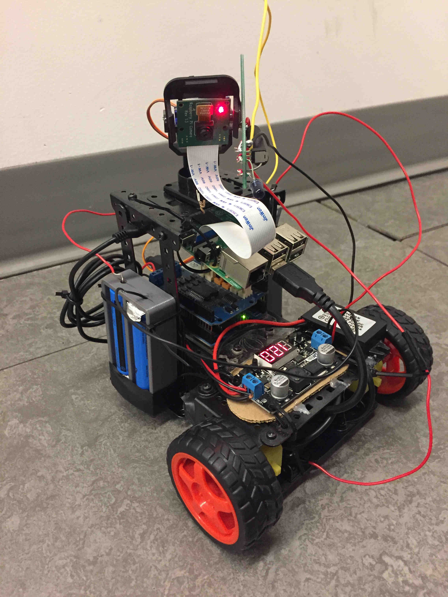
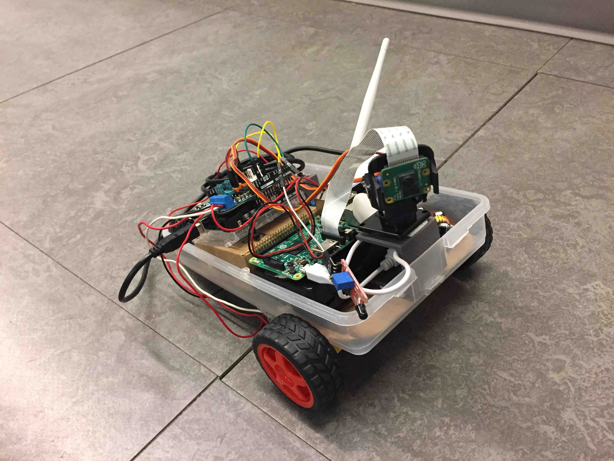
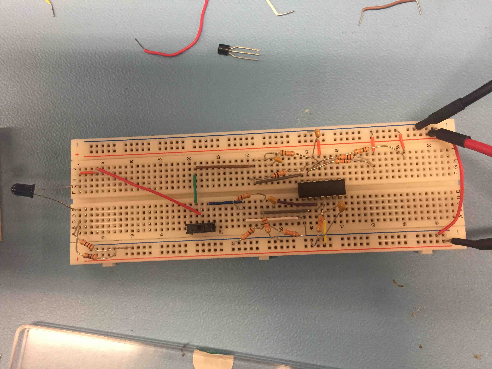
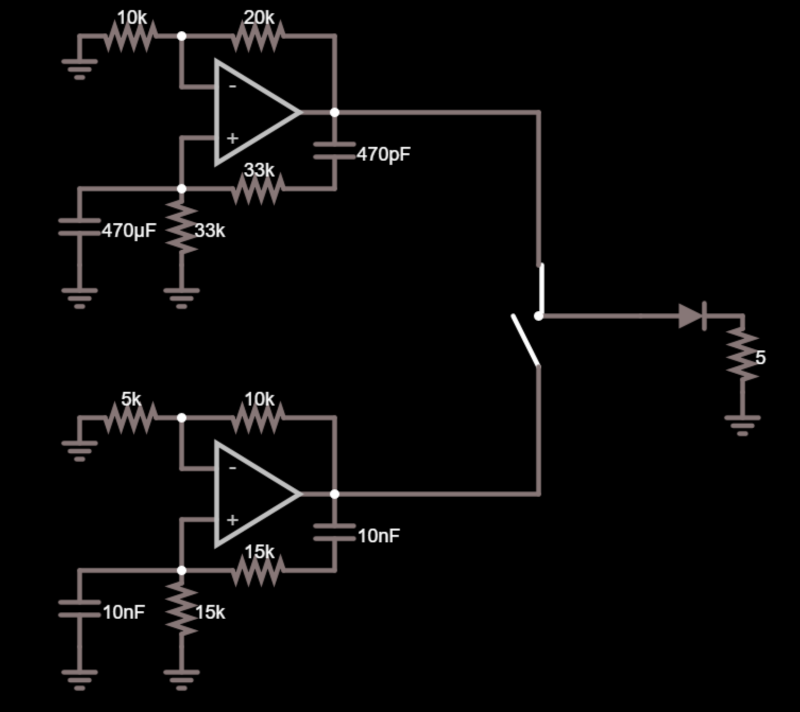
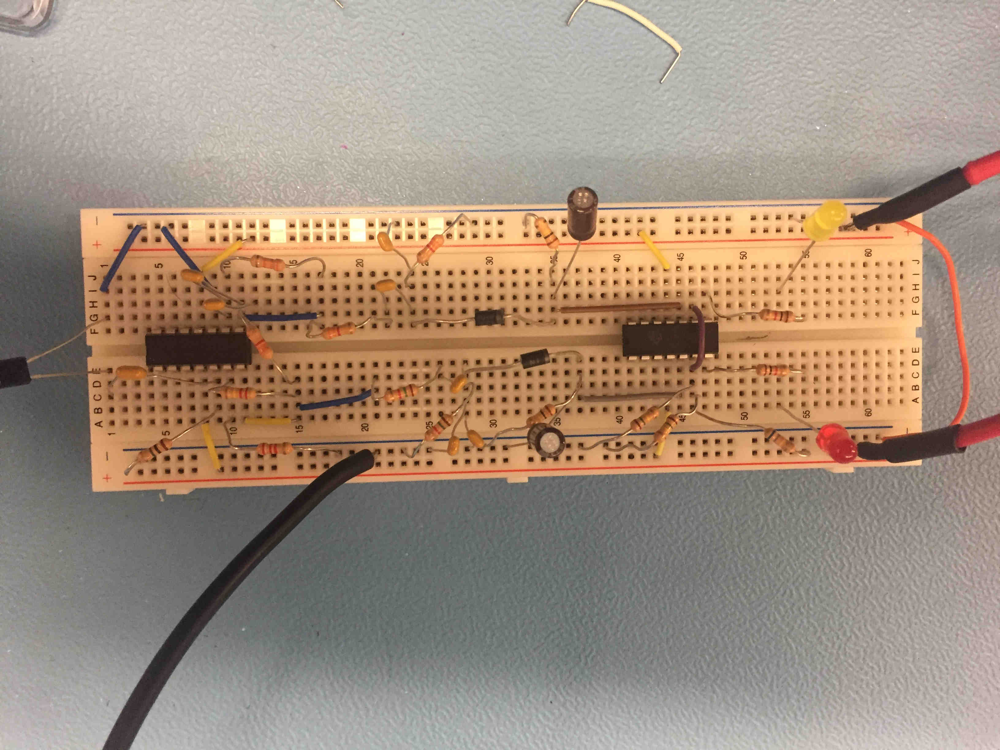
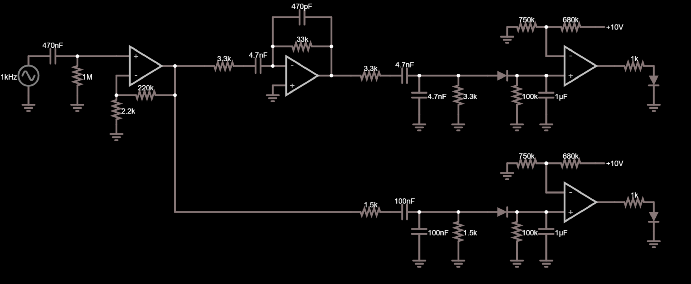

CyBots
Winner of Computer Science 309 'Best Project' Award (Voted #1 out of 59 group projects)
Cybots is a web-based platform for battling real life-robots in a laser-tag-like game. Users log onto the CyBots website, head to the lobby and choose their role. They can choose between two prebuilt robots, each with their own advantages and disadvantages. Once they choose which robot they want, they have to choose which job they want on the robot: driver or gunner. The driver uses the web interface to manuever the robot around the room, while the gunner uses the arrow keys to move the camera and mounted infrared laser around.
Once all players are connnected, the game begins. The driver has to mannuever his robot to try to dodge the enemy blasts, and the gunner has to try and shoot his laser at the opposing robot. Everytime a robot is hit by a lazer, it loses health. As it loses health, it starts to move slower and slower, until the health reaches zero and the game is lost.
Each robot has the following:
- Raspberry Pi 3 (with WiFi) that acts as the "brains" of the robot. All of the processing the robot does occurs in the pi. All communication with the server goes over the pi's WiFi.
- A Raspberry Pi Camera. This acts as the "eyes" of the bot. The video from this camera is streamed over the pi's wifi so the players can see what the robot sees.
- A servo mount with two degrees of freedom. Think of this device as the 'neck' of the robot; it lets the robot look around. This device holds the camera and the infrared cannon. The gunner player can control these motors with the arrow keys. This allows him or her to pan up, down, left or right.
- An infrared cannon. This device is an LED circuit soldered onto a perfboard. When the gunner player hits the "fire" button, a burst of current is sent through the LED, which shoots out a blast of IR light. If the cannon is pointed at the other robot, the burst is interpreted as a "hit" and lowers the opposing robots health.
- An Arduino Uno and Motor Shield, which acts as an interface to the motors. The Arduino does not do very much "thinking" on its own; it simply does whatever the pi tells it to do. When the robot needs to move, the pi will send a command over the USB connection between the device, and then the Arduino will execute that command.
- Two primary motors. These two motors are connected to the front wheels and powered by the Arduino. They are the motors that move the robot.
- Four lithium-ion batteries. This robot uses four "18650" lithium batteries. These are the exact cells you would find if you broke open the battery of a laptop or Tesla vehicle. They last much, much longer than AA batteries, and are recharchable.
- Two seperate voltage conversion boards. The first board converts from the (approx.) 16 volts from the batteries down to 12 volts, which is the maximum voltage the Arduino can run at. The second board converts from 12 volts down to 5 volts, which powers the Raspberry Pi and the IR cannon.
We built two robots for this project. The first was affectionately named Cornelius:
And we named the second Mr. Robot:
Vinny the Chatroom Moderator
Fall 2016 HackISU Project
Vinny is the name we gave to a moderating bot for the instant messaging application Discord. Two of my friends and I created Vinny at an ISU Hackathon to replace a moderator bot that was being used in our Discord server, but was no longer being maintained. Vinny’s original goal was to perform basic moderating tasks such as preventing spam and harsh language. Eventually we added more features, such as the ability to play songs over the chat channel.
I was in charge of writing Python code that would allow Vinny to access data from other websites via various API’s. I used API’s from Clarifai, Reddit, and other image websites to allow Vinny to access funny pictures and automatically post them in chat. In doing this, I learned a lot about ReSTful API’s and how to program in Python.
Vinny helps reduce the workload of Discord server moderators so they can spend more time interacting with people on their servers. Vinny is on Github and currently moderates over 300 servers.
Mars Rover
Final project for CprE 288: Embedded Systems.
The project involved programming a specialized Roomba to navigate a treacherous obstacle course, without being able to see the robot.
I wrote most of the “Rover” code: the code that ran on the actual robot, while my teammates wrote most of the “Mission Control” code, which is the code that ran on the computer that was wirelessly connected to the robot. This project presented many unique challenges for one reason: the robot’s processor was incredibly simple, and the memory was very small. This forced me to rethink how I wanted to write a lot of my code, because complex solutions that took a lot of memory were simply not possible.
While we probably won’t be putting a Roomba on Mars, there are many important applications of the same principles of embedded software that I learned during this project. The same principles of lightweight and reliable design can be applied to any low-cost embedded platform.

Infrared Light Sensor
Final Project for EE 230: Electronic Circuits and Systems
The goal of this project was to make two devices that can wirelessly communicate using only infrared light. The first device, the 'transmitter' has an infrared LED that sends pulses of IR light towards the reciever. The transmitter has a switch that lets the user choose between two different pulse frequencies for the LED. The second device, a.k.a. the 'reciever', will either light up a red LED or yellow LED depending on which frequency the users chose on the transmitter.
This project serves as a basic representation of how wireless communication might be achieved using filters. Similar concepts are used in devices like TV remotes.
Transmitter
 Receiver
 